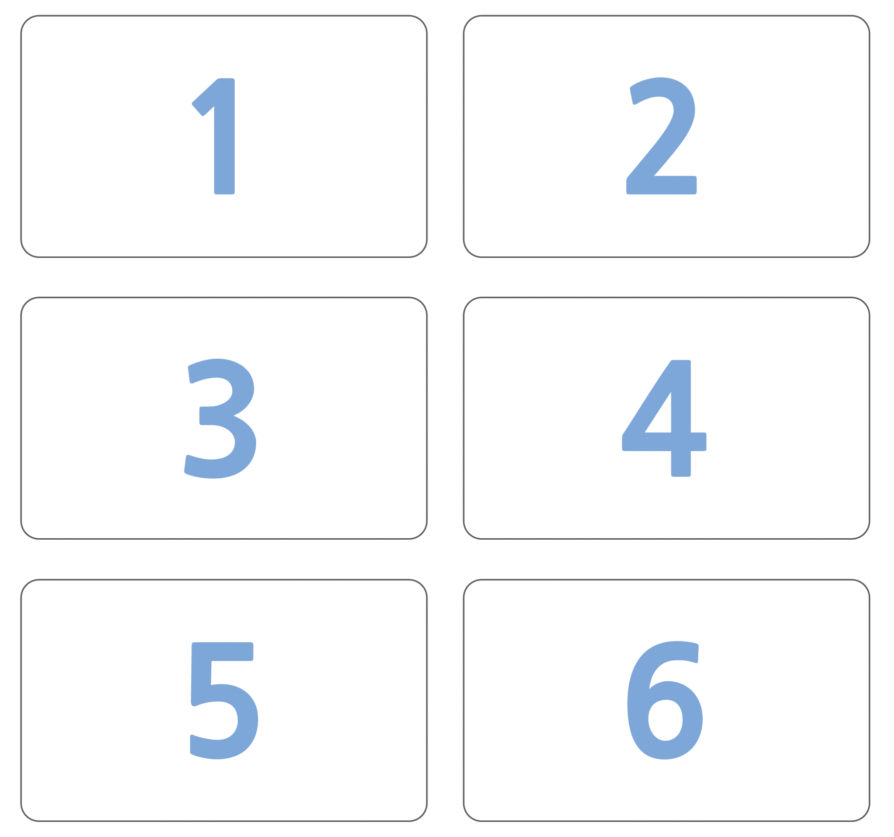
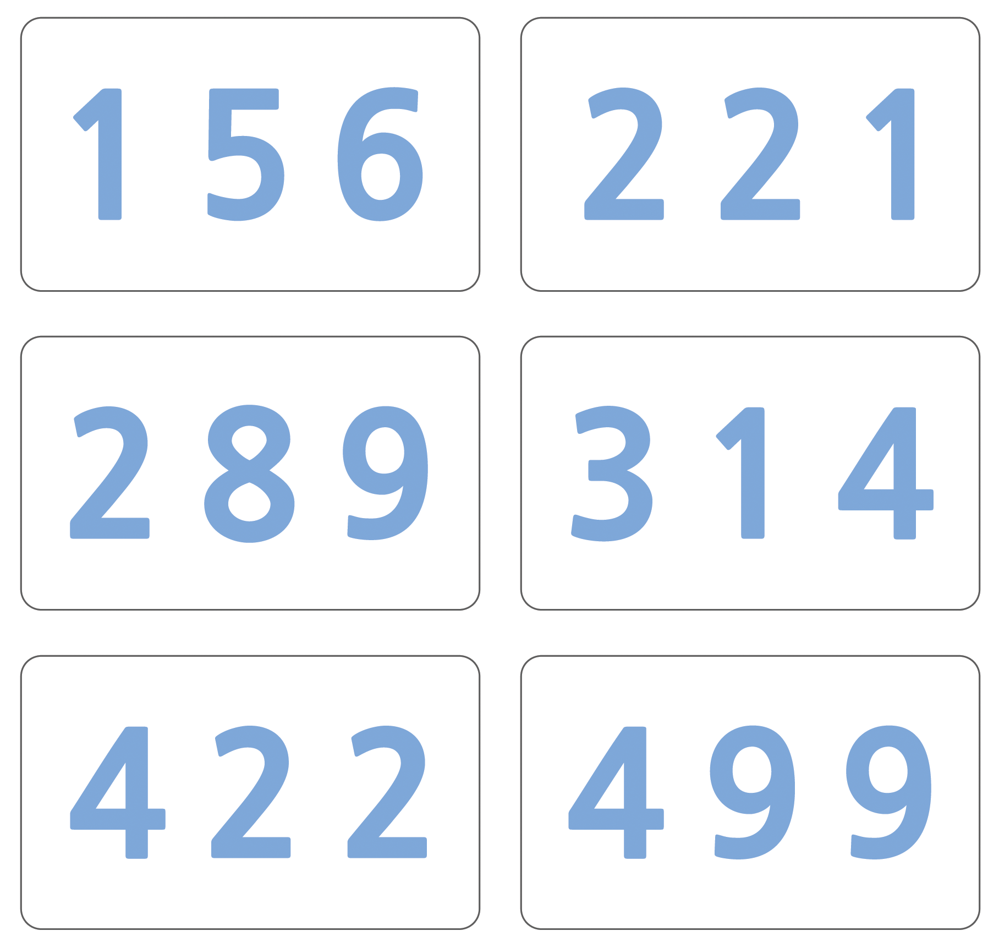

8 . 정렬 네트워크
8.3 시간 내 일을 마치기
먼저 활동을 시작하기 전에, 지면에 아이가 걸을 정도 크기로 네트워크 다이어그램을 그립니다. 교실에서는 큰 종이나 시트를 사용하면 좋습니다.
네트워크 활동
8.3.1 지시사항
이번 활동에서는 정렬 네트워크를 사용해서 컴퓨터가 어떻게 난수를 정렬하는지 학습할 것입니다.
- 아이들을 6 명이 1 조가 되도록 구성합니다. 한번에 한팀(6명 1조)만 정렬 네트워크게임을 할 수 있습니다.
- 각 조원은 숫자가 적힌 카드를 받습니다.
- 각 조원은 무작위로 섞여 왼편(들어가기) 사각형 위에 섭니다. 뒤죽박죽으로 번호 순서가 섞여야 합니다.
- 각 조원은 화살표 선을 따라 움직이고, 원(‘○’)에 도착하면 다른 조원이 도착할 때까지 기다립니다.
- 친구 조원이 ‘○’’ 곳까지 왔다면 당신의 카드와 친구의 카드를 비교해 봅시다.
작은 숫자 카드를 가지고 있는 사람은 왼쪽 줄을 따라 이동합니다.
더 큰 숫자 카드를 가진 사람은 오른쪽 줄을 따라 이동합니다.
- 반대쪽 끝에 모두 도착했을 때, 정렬이 제대로 되었는지 확인합니다.
잘못되면 다시 처음부터 다시 시작합니다. 예를 들면, 네트워크 접점(‘○’)에서 작은 숫자는 왼쪽으로, 그렇지 않으면 오른쪽으로 진행한다는 것을 제대로 이해할 수 있는지 확인합시다.
 {#width=100%}
{#width=100%}8.4 학습교구: 정렬 네트워크

8.4.1 변형
아이들이 활동에 익숙해지면, 초시계를 사용하여 한 조가 네트워크를 통과하는데 얼마나 걸리는지 시간을 측정합니다.
좀더 큰 수를 카드로 사용합니다. (예, 복사 마스터 세자리 숫자를 복사해서 사용하세요.)
비교하기 힘든 큰 숫자 카드를 만들어 봅시다. 또는 단어 카드를 사용하여 가나다 순서나 영어 알파벳 순서로 정렬해 봅시다.
8.4.2 확장 활동
- 작은 숫자를 가진 사람이 왼쪽 대신에 오른쪽으로 가면, 혹은 역으로 하면 무슨 일이 생길까요? (숫자는 반대로 정렬될 것입니다.)
네트워크 역방향으로 진행하면 어떻게 될까요? (반드시 동작하지는 않습니다. 아이들은 제대로 정렬되지 않고 나오는 경우를 발견할 수 있어야 합니다.)
- 좀더 크거나 작은 네트워크를 설계해 보세요. 예를 들어 숫자 세개를 정렬하는 네트워크가 있습니다. 아이들 각자 자신만의 네트워크를 그려보세요.
- 다음은 입력 숫자 4개를 정렬하는 서로 다른 두 개의 네트워크입니다. 어느 쪽이 더 빠를까요? (두 번째가 더 빠릅니다. 첫 번째 네트워크는 순차적으로 모든 비교를 수행하는 반면에 두 번째 네트워크는 동시 비교를 수행합니다. 첫번째 네트워크는 순차처리 예가 되고, 반면에 두번째 네트워크는 더 빠른 병렬처리를 사용합니다.)

좀더 커다란 정렬 네트워크를 만들어 보세요.
입력 데이터 중에서 최소 혹은 최대값을 찾아내기 위해서도 네트워크를 활용합니다. 예를 들어, 여기 최소 출력값을 얻기 위한 입력 숫자 8개를 가진 네트워크가 있습니다. (다른 값들은 네트워크에서 사라집니다.)

최소 네트워크
- 일상생활에서 병렬처리하면 빠르게 할 수 있는 일이 어떤게 있을까요? 병렬적으로 처리해도 별로 효과가 없는 일은 무엇일까요? 예를 들어, 요리를 할 때 조리기구를 하나만 사용한다면 무척이나 느릴 것입니다. 왜냐하면 조리기구를 순차적으로 요리를 한다면, 요리 하나가 끝날 때까지 기다려야 하기 때문에 시간이 오래 걸릴 것입니다. 더 많은 사람을 고용해서 빨리 끝날 수 있는 일과 그렇지 못한 일은 무엇이 있을까요?
8.5 컴퓨터 과학 핵심 개념
오늘날 컴퓨터를 점점 더 많이 사용함에 따라 더 빠르게 컴퓨터가 정보를 처리해주기를 원합니다.
컴퓨터 속도를 높이는 방법은 동일한 작업을 수행함에 있어 더 적은 연산절차(활동 6과 7에서 학습)를 가진 프로그램을 작성하는 것입니다.
문제를 더 빠르게 해결하는 다른 방법은 동시에 같은 작업을 나누어서 다수 컴퓨터로 작업을 수행하는 것입니다. 예를 들어, 숫자 6개 정렬 네트워크에서, 6개 숫자를 정렬하기 위해서 12번의 비교가 필요하지만, 동시에 최대 3회 비교를 한번에 수행했다. 이것이 의미하는 것은 정렬에 걸리는 시간이 5회 비교작업 시간과 동일하다는 것이다. 이 병렬 네트워크는 목록을 순차적으로 비교하여 처리하는 것보다 두배 이상 빨리 정렬할 수 있다.
모든 작업이 병렬처리를 통해서 빨라질 수 있는 것은 아닙니다. 한 사람이 10 미터 도랑을 판다고 상상해 봅시다. 만약 10 사람이 1 미터씩 도랑을 판다면, 10 미터 파는 작업은 훨씬 빠르게 끝납니다. 하지만 동일한 전략이 10미터 깊이 땅굴을 팔 때는 사용될 수 없습니다. 첫 1 미터 작업이 끝날 때까지 다음 1미터 작업을 할 수 없기 때문입니다. 컴퓨터 과학자들은 컴퓨터를 병렬로 작동함으로써 빠르게 문제를 해결하는 방법을 찾으려고 적극적으로 노력하고 있습니다.